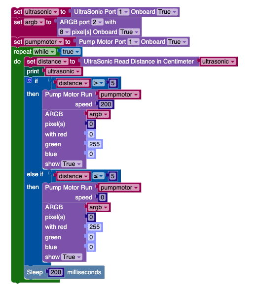
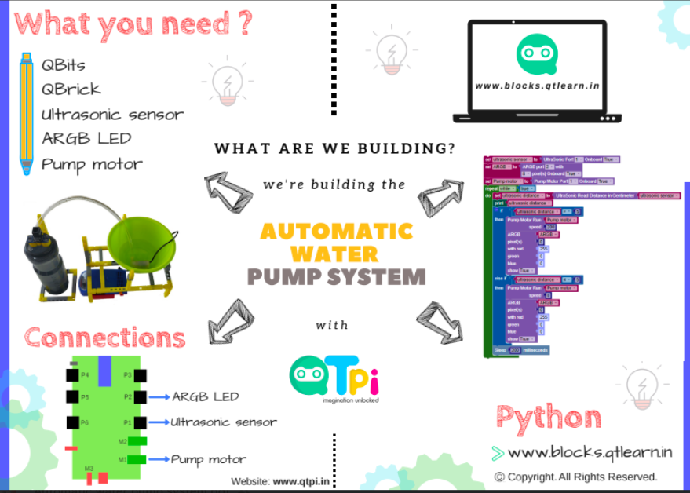

Automatic water pump system helps in conserving water,its an automated system it will turn on/off motor according to water level in tank.
This project showcases how to build Automatic Water Pump using QtPi hardware and writing logic using python based low-code programming platform.
Build the Structure using building blocks. Connect the components as shown in the picture
Logic for Automatic Water Pump is written using the low-code platform Python-Low Code which provides a digital version of all physical components, such as Ultrasonic Sensor, Pump Motor, ARGB LED in the case of the Automatic Waterpump project.
- Ultrasonic sensor detects the level of water, if it reaches near to top ( < 5 cm in this example), pump motor is turned off so that water wont be pumped and ARGB LED will turn RED
- If Ultrasonic Sensor reading is more ( > 5 cm in this example), pump motor is turned on so that water will be pumped and ARGB LED will turn GREEN
The following Python script controls a pump motor and LED indicators based on ultrasonic sensor readings.
from uqtpy.sensors.ultrasonic import UltraSonic
from uqtpy.actuators.argb import ARGB
from uqtpy.actuators.pumpmotor import PumpMotor
from time import sleep_ms
ultrasonic2 = None
argb2 = None
pumpmotor2 = None
distance = None
ultrasonic2 = UltraSonic(port=1, ob=True)
argb2 = ARGB(port=2, pixels=8, ob=True)
pumpmotor2 = PumpMotor(port=1, ob=True)
while True:
distance = ultrasonic2.read_distance_cm()
print(ultrasonic2)
if distance > 5:
pumpmotor2.run(speed=200)
argb2.set_color(pixels=0, red=0, green=255, blue=0, show=True)
elif distance <= 5:
pumpmotor2.run(speed=0)
argb2.set_color(pixels=0, red=255, green=0, blue=0, show=True)
sleep_ms(200)
QBrick (Motherboard) will have firmware in it which understands the logic written using Low-Code platform
